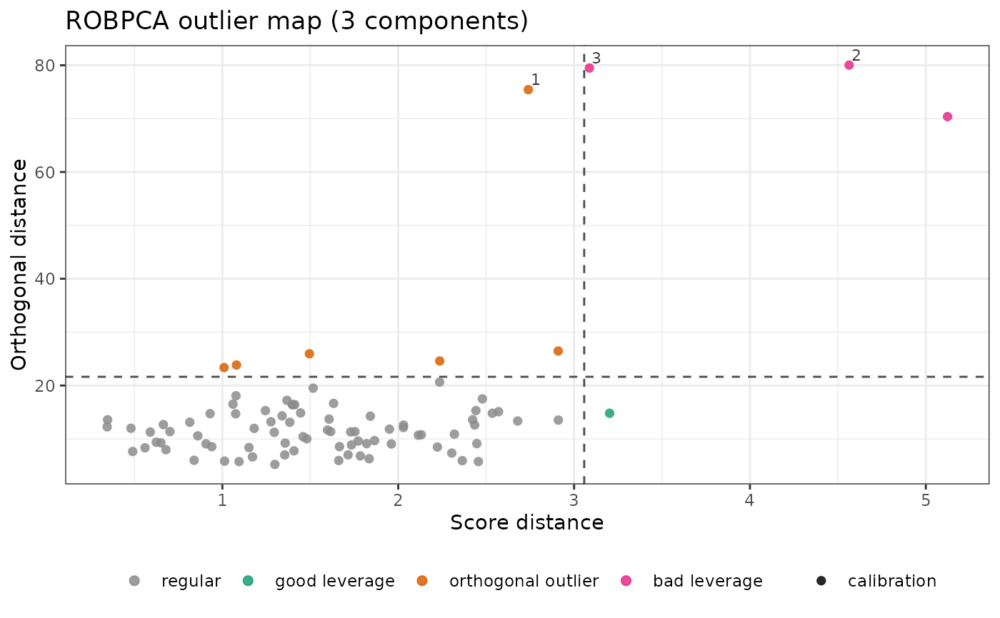
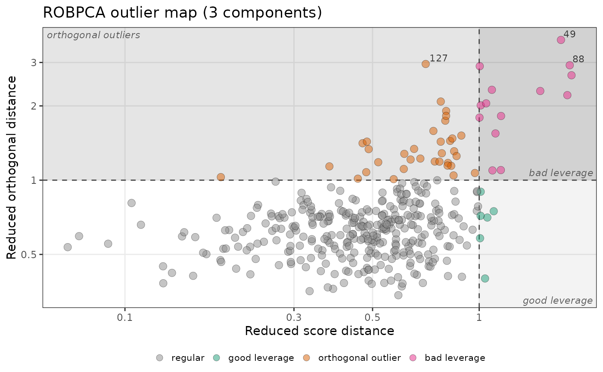

Plots the orthogonal distance of each observation against its score
distance, for a robust PCA fitted by robpca(), rospca(),
macropca() or cellpca() (Hubert, Rousseeuw and Vanden Branden, 2005).
For cellpca(), the vertical axis is the norm of the standardized
residuals, as in the enhanced outlier map of Centofanti, Hubert and
Rousseeuw. For a robust calibration model fitted by rsimpls() or
rpcr(), it is by default
the regression outlier map of Hubert and Vanden Branden (2003): the
residual distance (with one response, the absolute standardized residual)
against the score distance. With map = "score", it is the score outlier
map of the predictors: the orthogonal distance of each spectrum to the
model against its score distance, as for a robust PCA.
Arguments
- object
An object returned by
robpca(),rospca(),macropca(),cellpca(),rsimpls()orrpcr().- newdata
Optional new observations to add to the map (a numeric matrix or data frame with the calibration variables). Not available for the regression outlier map of
rsimpls()andrpcr()fits.- labels
The number of most outlying observations to label (by their row names, or row numbers). Default is 3; use 0 for no labels.
- relative
If
TRUE, plot the reduced distances (divided by their cut-offs). Default isFALSE.- shade
If
TRUE, shade the three outlying regions in grey, darker for more harmful observations (good leverage, orthogonal outliers, bad leverage), and name them in their corners. The region of regular observations stays white. Default isFALSE.- log
If
TRUE, use logarithmic axes, which spread out the regular observations when a few are far away. Zero distances are drawn at the smallest positive distance. Default isFALSE.- colour_by
The colors of the points:
"type"(default), by outlier type, or"distance", by their reduced distance from the origin, \(\max(SD/c_{SD}, OD/c_{OD})\), on a rainbow scale from dark red (the closest) to blue (the farthest). Withrelative = TRUE, where both cut-offs are at 1, yellow marks the cut-offs: dark red through orange for the regular observations, then green and blue for the outlying ones. Otherwise, the colors spread evenly over the distances.- title
The plot title.
- map
For
rsimpls()andrpcr()fits, the map to draw:"regression"(default), the regression outlier map, or"score", the score outlier map of the predictors. Not used for robust PCA fits.- ...
Further arguments passed to
ggplot2::geom_point()to style the points, such asalpha(default 0.85),size(2.2),stroke(0.4) orcolour(the outline,"black").sizecan also be a numeric vector with one value per sample (the calibration samples, then those ofnewdata), such as the concentration of an element, to vary the size of the points, with a legend.
Details
The dashed lines are the cut-offs of the two distances. They divide the map into four types of observations:
regular observations (bottom left);
good leverage points (bottom right): far from the center, but close to the PCA subspace, so they follow the structure of the data;
orthogonal outliers (top left): close to the center once projected, but far from the PCA subspace;
bad leverage points (top right): far on both counts, the most harmful outliers.
In the regression outlier map of rsimpls() or rpcr(), the top left
region holds
the vertical outliers: observations with a typical spectrum but a
large residual, such as a wrong reference value. Bad leverage points have
both an outlying spectrum and a large residual; good leverage points have
an outlying spectrum that the model still fits.
New observations (newdata) are projected onto the model with
predict() (or
predict() for the score outlier map of an
rsimpls() or rpcr() fit) and shown with the calibration cut-offs,
which is how new spectra are screened before prediction.
With relative = TRUE, each distance is divided by its cut-off (the
reduced score and orthogonal distances), so both cut-offs are at 1
whatever the model. This puts maps of different models
(for example, with different numbers of components) on the same scale.
A relative distance tells where an observation falls with respect to the
cut-off, not how unlikely it is: twice the cut-off is not equally rare
in every model.
Examples
spectra_id <- forageLIBS |> dplyr::select(1:2) |> names()
minerals <- forageLIBS |> dplyr::select(3:14) |> names()
set.seed(1)
fit <- forageLIBS |>
dplyr::select(-dplyr::all_of(c(spectra_id, minerals))) |>
center() |>
robpca()
plot_outlier_map(fit, relative = TRUE, shade = TRUE, log = TRUE)

plot_outlier_map(fit, relative = TRUE, shade = TRUE, log = TRUE,
labels = 10, colour_by = "distance")
